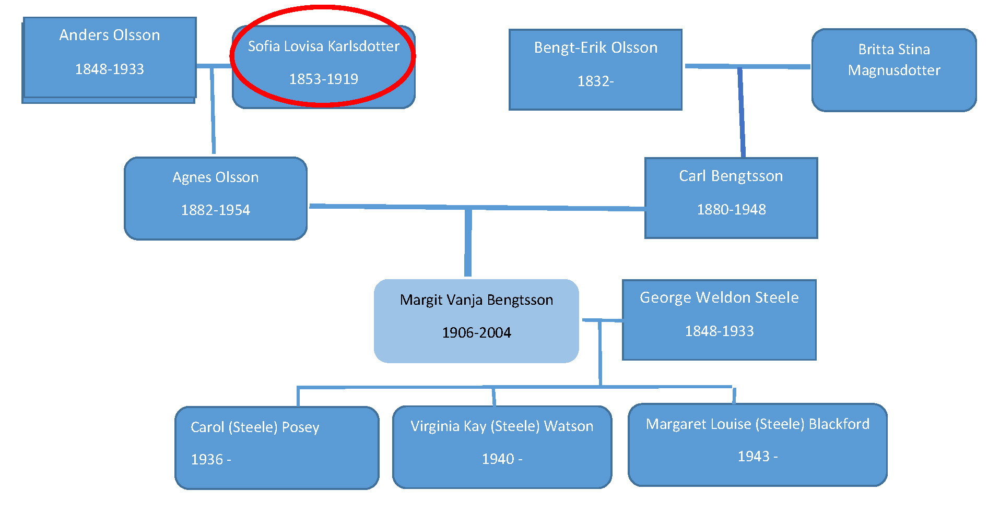
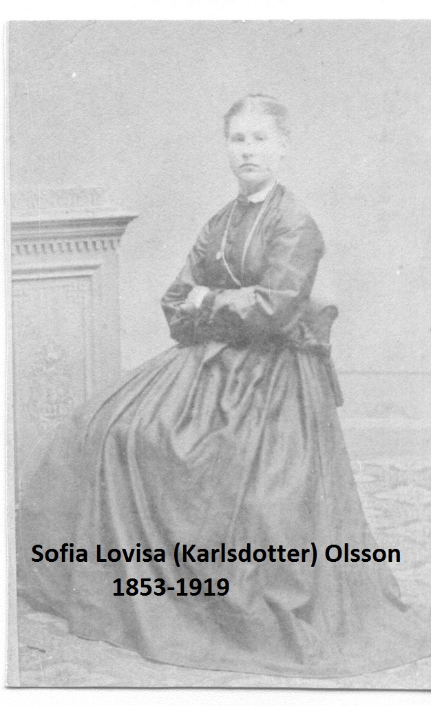

Sofia Lovisa Karlsdotter
Born: 1853 Sweden
Died: 1919 Sweden
Mother: Cajsa Nilsdotter (1826- )
Father: Carl Larsson (1821- )
Husband:
Anders Olsson
Children:
Anna Kristina 1875-
Axel Albin 1878-
Agnes Andersdotter 1882-1954
Elin Sofia 1887-
Hilder Maria 1889
Carl Hjamar Stark

